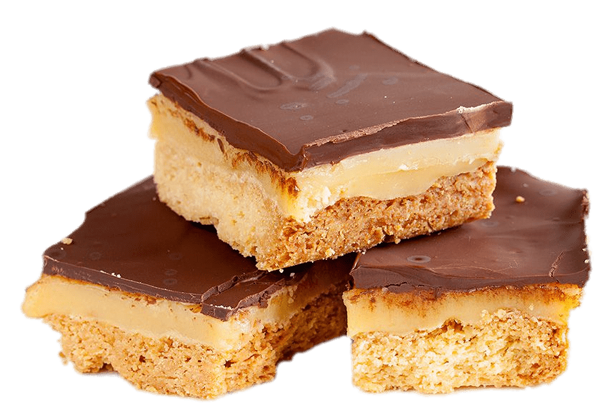

Easy Millionaire's Shortbread

Description
Combine the crunch of a shortbread base with a gooey caramel middle and chocolate topping, and you have millionaire's shortbread - the ultimate sweet treat.
Ingredients
For the shortbread
- 250g plain flour
- 75g caster sugar
- 175g butter, softened
For the caramel
- 100g butter or margarine
- 100g light muscovado sugar
- 397g can condensed milk
For the topping
- 200g plain or milk chocolate, broken into pieces
Steps
- Heat oven to 180C/160C fan/gas 4. Lightly grease and line a 20-22cm square or rectangular baking tin with a lip of at least 3cm.
- To make the shortbread, mix 250g plain flour and 75g caster sugar in a bowl. Rub in 175g softened butter until the mixture resembles fine breadcrumbs.
- Knead the mixture together until it forms a dough, then press into the base of the prepared tin.
- Prick the shortbread lightly with a fork and bake for 20 minutes or until firm to the touch and very lightly browned. Leave to cool in the tin.
- To make the caramel, place 100g butter or margarine, 100g light muscovado sugar and the can of condensed milk in a pan and heat gently until the sugar has dissolved. Continually stir with a spatula to make sure no sugar sticks to the bottom of the pan. (This can leave brown specks in the caramel but won't affect the flavour.)
- Turn up the heat to medium high, stirring all the time, and bring to the boil, then lower the heat back to low and stirring continuously, for about 5-10 minutes or until the mixture has thickened slightly. Pour over the shortbread and leave to cool.
- For the topping, melt 200g plain or milk chocolate slowly in a bowl over a pan of hot water. Pour over the cold caramel and leave to set. Cut into squares or bars with a hot knife.
This recipe is from BBC Good Food - member recipe by fetchgirl